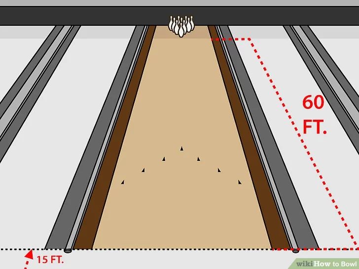
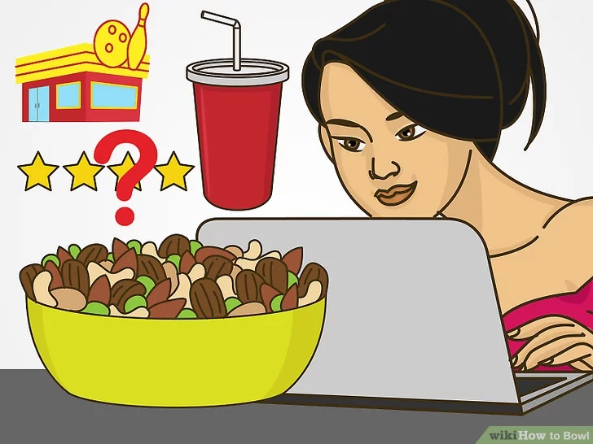
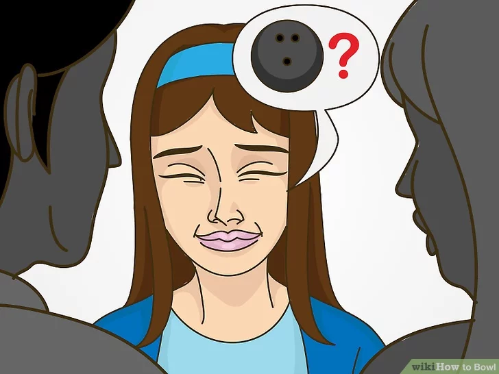
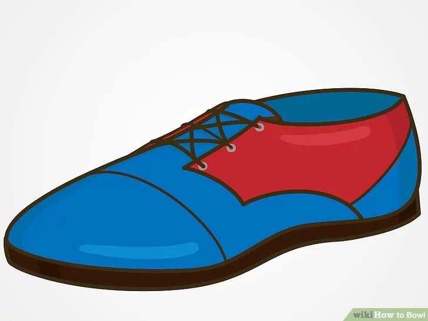
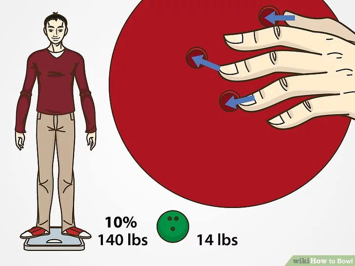
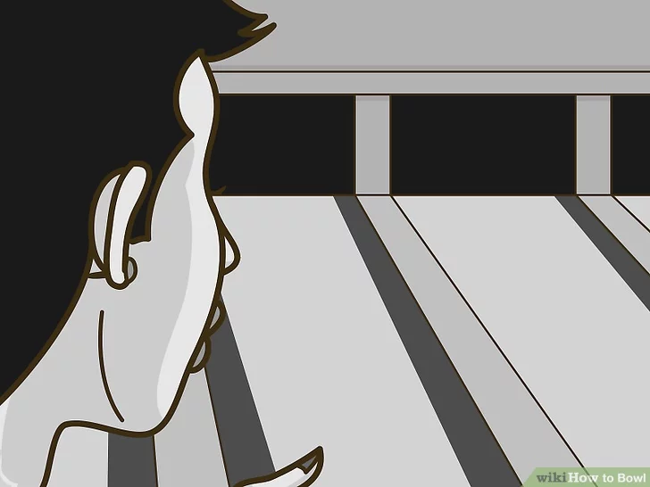

BOWLING
HOW TO PLAY?
Download Instructions
For Saving Instructions Offline Click The Button Below
downloadInstructions
1. Understand the bowling lane.

- The approach area is 15 feet (4.6 m) long and ends at the foul line. The bowler cannot overstep the foul line during their approach or their shot won't count.
- If a ball goes into the gutters and then bounces out and hits the pins, it won't count.
Before you begin to bowl, you have to understand the function of the bowling lane. A bowling lane is 60 feet (18.3 m) long from the foul line, the line closest to the bowler, to the head pin, the pin closest to the bowler. There are gutters on either side of the bowling lane. If a ball veers off the lane, it goes into the gutters and is out of play.
2.Understand the bowling pins.

- The locations of the pins are assigned numbers 1-10. The pins in the back row have the numbers 7-10, the pins in the row above the back row are numbered 4-6, the pins in the second row are numbered 2-3, and the head pin is pin 1.
- All pins will earn the bowler one point if they are hit. The numbers are based on location, not value.
Ten pins are arranged at the end of the bowling lane at the beginning of every frame. They are arranged in a triangle formation, with the point of the triangle facing the bowler. There is one pin in the first row, which is the head pin, two pins in the second row, three in the third, and four in the fourth.
3. Learn the lingo

- A strike is when you knock down all the pins with the ball on your first try.
- A spare is when you knock down all the pins on your second try.
- A split is when the first ball of a frame knocks down the headpin (the pin closest to you) but leaves two or more pins that are non-adjacent. It's tough to hit a spare in this situation, especially if you have a 7-10 split, which is the hardest split to hit.
- A turkey is three strikes in a row.
- If any pins remain after the bowler's turn, it's called an "open frame."
Before you can call yourself a true bowler, you should be aware of a few different bowling terms. Knowing these terms will also make it much easier for you to understand the rules. Here they are
4. Understand how a game of bowling works.

- A bowler can roll the ball twice in each frame, provided that they do not hit a strike.
- A bowler gets an extra turn on the tenth frame if they knock down all the pins on the first turn.
One bowling game consists of 10 frames. Each frame is equal to one turn for the bowler. The bowler's objective is to knock down as many pins as possible in a frame, ideally all of them.
5. Learn the scoring.

- If a bowler hits a spare, then they should place a slash mark on their score sheet. After their next turn, they will receive 10 points plus the number of pins they knock down with that turn. So if they knock down 3 pins after their first turn, then they will get 13 points before their second turn. If they then knock down 2 pins in their second turn, they get a total of 15 points for that round.
- If a bowler hits a strike, they should record an X on their scoresheet. The strike will earn the bowler ten points plus the number of pins knocked down on the player's next two turns in the following round.
- The most a bowler can score in one game is 300 points. This represents 12 strikes in a row, or 120 pins that were knocked down in 12 frames. A perfect game has 12 strikes and not ten, because if the bowler gets a strike on the last frame, then they can take two more turns. If those two turns are also strikes, they will have 300 points.
- If a player rolls a spare in the last frame, then they can take one more turn.
If a bowler has an open frame, then they simply get credit for the number of pins they knocked down. If a bowler knocked down 6 pins after two turns, they simply get two turns. However, if a bowler hits a spare or a strike, the rules get slightly more complicated.
6. Find a bowling alley.

- If you want to go bowling with friends, find a place that's rated for having a fun environment and maybe some food and snacks as well.
Go online to find a local bowling alley that suits your needs. Try to find a place that offers bowling lessons or has beginner bowling leagues.
7. Go to the bowling alley you've chosen.

Talk to the fellow bowlers and staff, and see if you can even join a game. Alternately, you can go to an alley with a group of friends. If you ask a crowd if you can join their game, make sure it isn't too competitive. You may even make new friends at the alley.
8. Get some bowling shoes.

- If you don't wear bowling shoes, you can also damage or leave scuff marks on the alley floor. Rent a pair of shoes unless you want to get in trouble before you even start bowling.
- Don't forget to wear socks or bring socks to the alley. Some alleys sell socks, but they will be expensive.
If you're a beginner, you can just rent shoes at the alley. If you want to kick up your game, you can buy a pair of your own shoes. Street shoes won't work for bowling because they'll either make you stick to the floor instead of sliding naturally, or they'll make you slip too much and injure yourself.
9. Choose the right ball.

- Weight. A 14-16 lb ball would work for most adults with bigger hands, and a 10-14 lb ball would work for most adults with smaller hands. Generally, it's better to have a ball that is a little heavier because it will help you gain momentum. A general rule is that a ball should weigh 10% as much as your body, so if you weigh 140 pounds, you should bowl with a 14 lb ball.
- Size of the thumb hole. Your thumb should fit snugly into the single thumb hole. You should be able to take it out of the hole without it snagging or getting stuck, but the hole shouldn't be so large that you have to squeeze your thumb in the hole to hang on.
- Size of the middle finger holes. Once you've inserted your thumb, you should lay your middle and ring finger across the other two holes. If the span is correct, your two fingers should easily and comfortably lay over the two holes so the middle joint lines up with the side of the hole closest to your thumb. Curl your two fingers into the holes to make sure they fit snugly in the hole like your thumb.
Before you can begin to bowl, you need to find a ball that is the right weight for you and which is the right size for your fingers. The balls will be labeled based on their weight, so a ball with "8" written on it will weigh 8 pounds. Here's how to find a ball of the right size and weight
10. Find your bowling lane.

Once you've signed up at the alley and put on your shoes, you will be directed to a bowling lane. If you get to choose your lane, pick a lane that is away from loud or noisy people. But it's your choice: you may be able to bowl better if you're surrounded by other bowlers